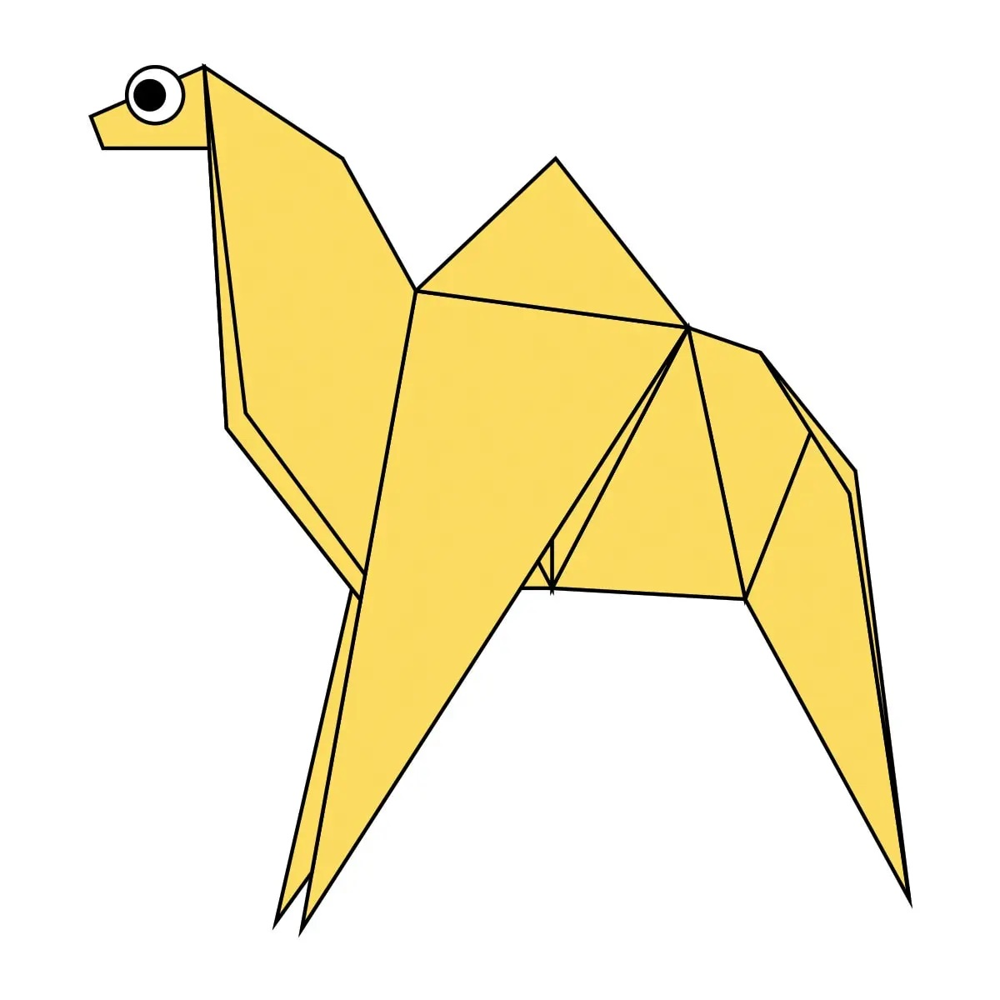

1. Pandas have a great camouflage in their environment 2. Pandas are also known as the panda bear 3. The name "giant panda" is sometimes used to distinguish it from the red panda
Camel Origami
Facts about camel
1. Camels ears are furry2. Camels can move easily across the sand because of its specially designed feet3. When they find water they drink as much as possible